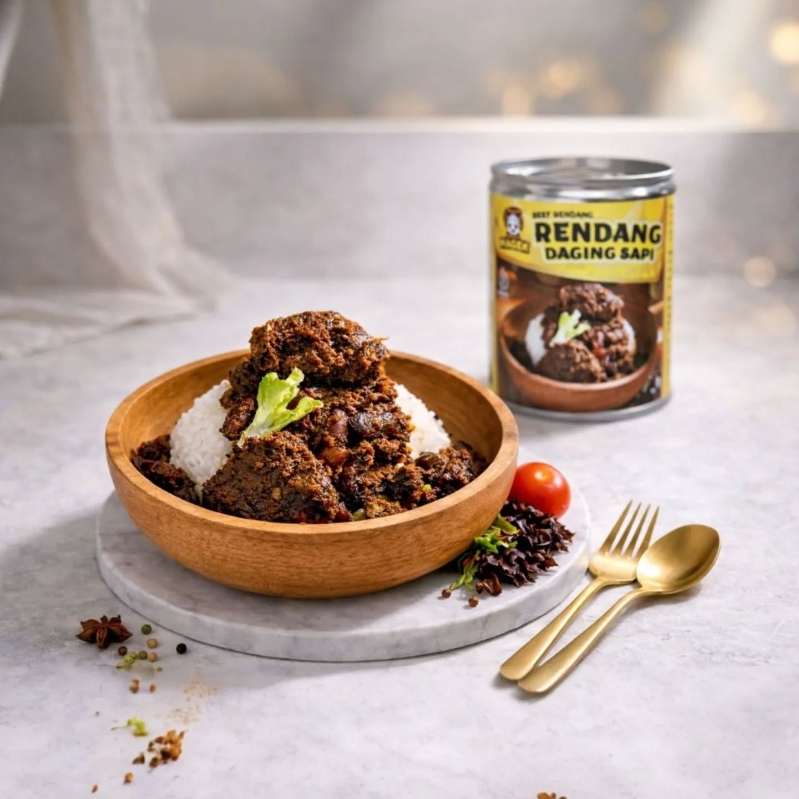
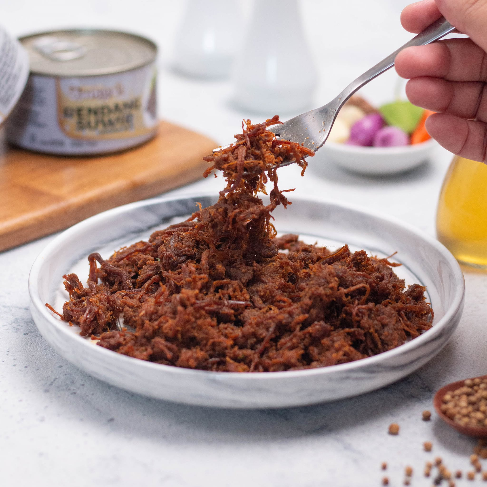
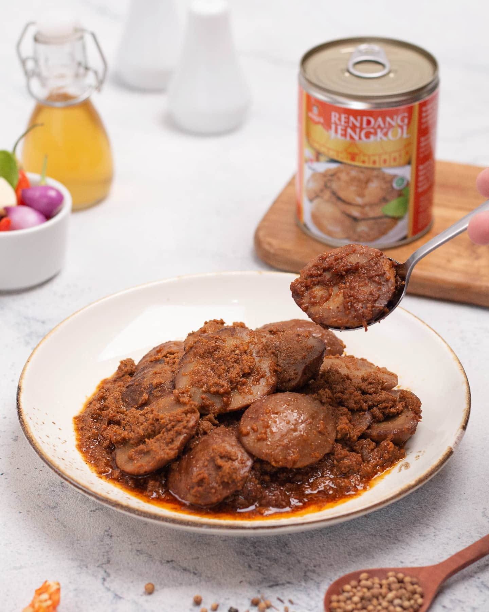
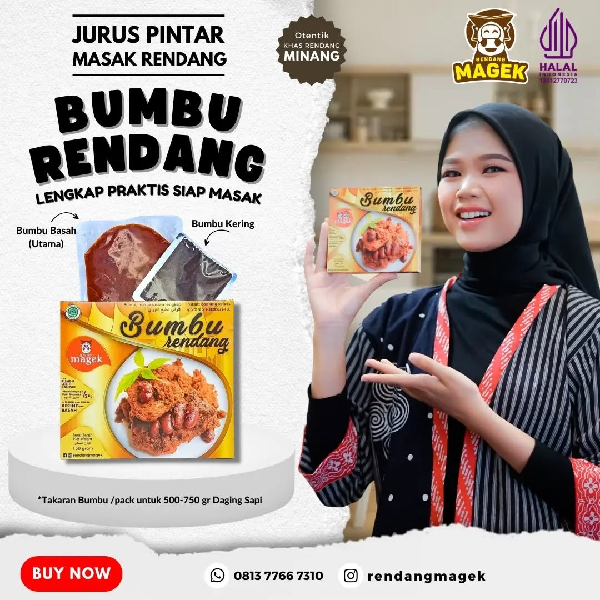

Pilihan klasik berbumbu kaya. Cocok untuk makan siang, bekal, dan meja keluarga.
Daging sapi · Kemasan kaleng
Tanya ketersediaan →
Akar Minang, rumah di Yogyakarta.
Ada yang selalu pas dengan nasi hangat: rendang berbumbu kaya, untuk makan sehari-hari atau berbagi di meja keluarga.
Dari Yogyakarta, untuk meja makan Anda.

01 / Pilihan Rendang
Kenali pilihannya, lalu tanyakan stok, ukuran kemasan, dan harga terbaru kepada kami.
Pilihan klasik berbumbu kaya. Cocok untuk makan siang, bekal, dan meja keluarga.

Daging sapi disuwir halus dengan bumbu rendang pekat. Tekstur lembut, cita rasa dalam.

Karakter khas jengkol dengan balutan bumbu rendang yang kaya. Pilihan tersendiri.
Bumbu lengkap praktis siap masak. Isi bumbu basah & kering untuk 500–750 gr daging.
02 / Cerita Magek
Minang → Yogyakarta
Jauh dari asalnya,
dekat dengan keseharian.
Magek membawa akar kuliner Minang ke Yogyakarta. Dua tempat yang bertemu dalam satu hal sederhana: makanan yang mengajak kita duduk bersama.
Bagi kami, rendang tidak harus menjadi hari istimewa. Ia juga punya tempat di meja makan siang, bekal, dan cerita sehari-hari.
03 / Ide di Meja
Sesederhana nasi hangat, sesempurna momen bersama.
Padukan dengan nasi dan sayur favorit. Makan siang sederhana yang selalu ingin diulang.
Rendang Suwir — buka kaleng, siap santap. Sempurna untuk mie, nasi uduk, atau lontong.

Bumbu Rendang Magek — lengkap basah dan kering. Masak rendang otentik di dapur Anda sendiri.
04 / Lihat Sendiri
05 / Cara Pesan
Mulai dari percakapan, selesai di meja makan.
Daging sapi, suwir, jengkol, atau bumbu rendang? Tentukan pilihan dan jumlah yang Anda butuhkan.
Kirim pesan ke +62 813-7766-7310 atau pesan langsung via GoFood Yogyakarta.
Konfirmasi pembayaran dan pilihan pengiriman atau pengambilan bersama kami.
06 / Sebelum Memesan
Beberapa hal yang mungkin Anda ingin tahu sebelum Magek ke meja makan.
Tanya langsung di Instagram →Apa saja pilihan dan harga terbaru?
Rendang Magek tersedia dalam empat pilihan: Rendang Daging Sapi, Rendang Suwir, Rendang Jengkol, dan Bumbu Rendang. Untuk stok dan harga terbaru, hubungi kami via WhatsApp +62 813-7766-7310 atau cek di GoFood Yogyakarta.
Apakah bisa dikirim ke luar Yogyakarta?
Sampaikan tujuan saat menghubungi kami. Tim Magek akan membantu mengonfirmasi pilihan pengiriman, ongkos kirim, dan perkiraan waktunya.
Bagaimana cara menyimpan dan menyajikannya?
Ikuti petunjuk penyimpanan dan tanggal kedaluwarsa pada kemasan. Tanyakan juga ketahanan rendang kepada kami saat memesan.
Bisa pesan untuk keluarga atau acara?
Tentu. Ceritakan kebutuhan, jumlah pesanan, dan tanggal yang Anda rencanakan. Kami akan konfirmasi ketersediaan dan detailnya setelah Anda memesan.
07 / Rawr Makan
Mulai dari menyapa kami. Tanyakan pilihan yang tersedia, lalu rencanakan sajian Anda berikutnya.
Temui Magek di Yogyakarta.
Jl. Melati No. 17 Blok E, Perengdawe, Balecatur, Gamping, Sleman · Senin–Sabtu, 09.00–20.00 · Minggu tutup